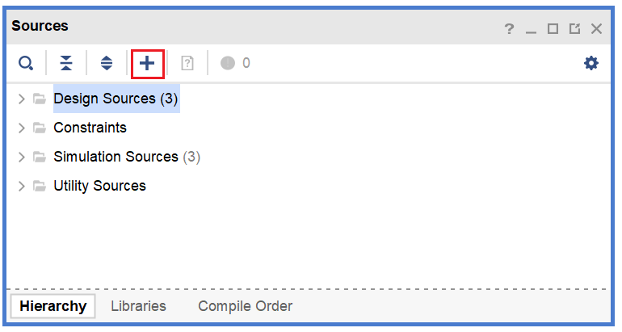
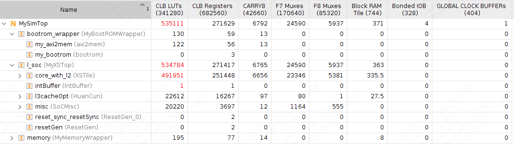

13. FPGA 验证
Under development!
在实际流片之前，我们需要在 FPGA 平台上实现我们可综合的数字系统设计，从而验证功能正确性。
我们使用 Xilinx Vivado 2019.1 进行 FPGA 验证。
FPGA 验证流程简介
在完成 RTL 代码设计之后，我们就可以进入 FPGA 验证流程（可以与流片流程同步进行），大致分为以下几个阶段。
导入设计
打开 Vivado，选择 Create Project，选择合适的工程名字和路径。
关于路径名称
如果是在本地运行（在Windows 系统或者 WSL 中），尽量避免中文路径，否则 Vivado 后续可能会报错。
选择 RTL Project，连续选择 Next，在 Default Part 选择验证所使用的 FPGA 核心板型号。
FPGA 核心板与开发板
FPGA 核心板：通常是一个小型的模块，包括了 FPGA 芯片以及其必要的外围电路，主要用于嵌入到更大的系统中，作为系统的一部分。核心板上一般包括 FPGA 芯片、必要的电源管理电路、时钟电路、基本的 I/O 接口等。它们通常没有太多的扩展接口和调试功能。
FPGA 开发板：是一个完整的开发平台，包含了核心板以及更多的外围设备和接口，用于 FPGA 的开发、调试和验证。它适合于开发者进行 FPGA 设计的原型验证和测试。开发板除了包含核心板的所有功能外，还包括更多的扩展接口（例如 USB 、以太网、HDMI 等）、调试接口（如 JTAG ）、存储器（如 SD 卡插槽）、显示器（如 LCD 屏幕）等，具体有哪些扩展接口取决于开发板的型号。
完成工程创建向导之后即可进入 Vivado 主界面。在 PROJECT MANAGER -> Sources 添加 RTL 代码。

在弹出界面中选择 Add or create design sources -> Add Files 即可导入设计。
编写仿真程序
为了验证 RTL 代码是否正确，需要用 Verilog 或 SystemVerilog 编写一个 Testbench，通过观察波形验证设计是否符合需求。
一个简单的 Testbench 大致如下。
module tb_top();
reg clock;
reg reset;
initial begin
clock = 0;
reset = 1
#100 reset = 0;
#2000000 $finish;
end
always begin
#1 clock <= ~clock;
end
MySimTop dut(
.clock(clock),
.reset(reset)
);
endmodule
Behavioral Simulation 行为仿真
对 RTL 代码编译之后即可进行的仿真，用于验证逻辑功能的正确性。 在逻辑综合前需要进行功能仿真，以便尽早发现设计中的缺陷。
Logic Synthesis 逻辑综合
在进行逻辑综合之前，需要预先选定目标的 FPGA 平台。综合工具会根据 FPGA 核心所包含的 LUT、BRAM 等资源对硬件设计进行逻辑综合。
在完成逻辑综合之后，会给出门级网表的各类信息，包括硬件设计所使用的 FPGA 资源。
以下图为例，该设计所需要的硬件资源超过了 FPGA 核心的限制，无法在单个 FPGA 芯片中实现。

替换 Block RAM
在出现 LUT 的资源占用过多的情况下，可以考虑将硬件设计中大块的缓存和存储单元用 Vivado 工具提供的 Block RAM IP 核替换，可以避免用 LUT 直接综合，从而减少 LUT 的利用率。
Block RAM IP
FPGA 的 Block RAM（BRAM）是一种嵌入在 FPGA 芯片内部的存储资源，通常以块的形式存在，每个块具有固定的大小（如18Kb或36Kb）。 由于 BRAM 位于 FPGA 内部，访问速度非常快，适合用于需要快速存取的应用场景。 BRAM 可以配置为不同的存储结构，如单端口 RAM、双端口 RAM、FIFO 等，满足不同的设计需求。 BRAM 的使用可以显著提高 FPGA 设计的性能和效率，特别是在需要大量数据存储和快速访问的应用中。
Implementation 物理实现
在逻辑综合之后，需要基于门级网表进行布局布线，得到硬件设计在 FPGA 芯片上的物理实现。
布局布线完成之后，FPGA 资源利用率会有所变化，这是因为在布局布线的过程中会改变逻辑单元的位置，导致 LUT 等资源的使用产生变化。
Generate Bitstream
在布局布线完成之后，需要生成比特流，连接 FPGA 板，并把相应的代码录入到 FPGA 核心之中，实现硬件逻辑的重构。